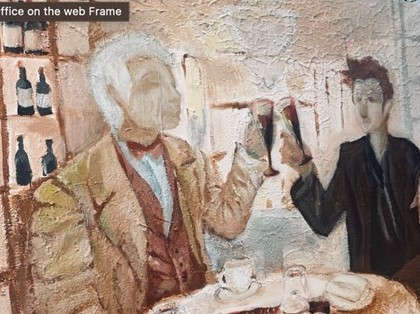
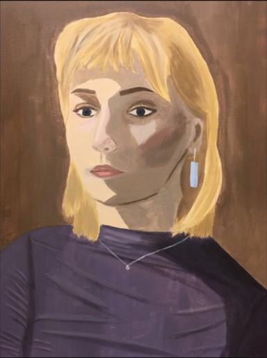

I Kunst og skapende lærer man mye nyttig om kunst, både hvordan man lager det, og hvorfor det er viktig
Kunst og skapende
Rask oversikt
Dette lærer du
- Om hvorfor kunst er viktig og hvordan kunst kan uttrykke våre tanker, følelser og verdier
- Å arbeide med skisser og ideer til ferdig uttrykk
- Du lærer å bruke kreativ programvare som Photoshop, Premiere, Ilustrator
- Å se nye sammenhenger faglig, estetisk og filosofisk
- Å tenke utenfor boksen
Dette gjør vi
- Tegner og maler
- Lager skulpturer og installasjoner
- Lager film og forteller historier
- Eksperimenterer med egne kunstuttrykk
- Lager utstilling av egne arbeider
- Opplever kunst fra arenaer som museer, gallerier og gatekunst
Faget er nyttig fordi
- Du får muligheten til å uttrykke det på andre måter enn gjennom ord
- Du utvikler din evne til problemløsning og å se nye muligheter
- Du får muligheten til å være kreativ og skapende
- Du filosoferer, utforsker, selvstendig og med veiledning

